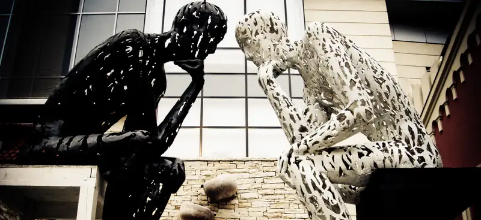
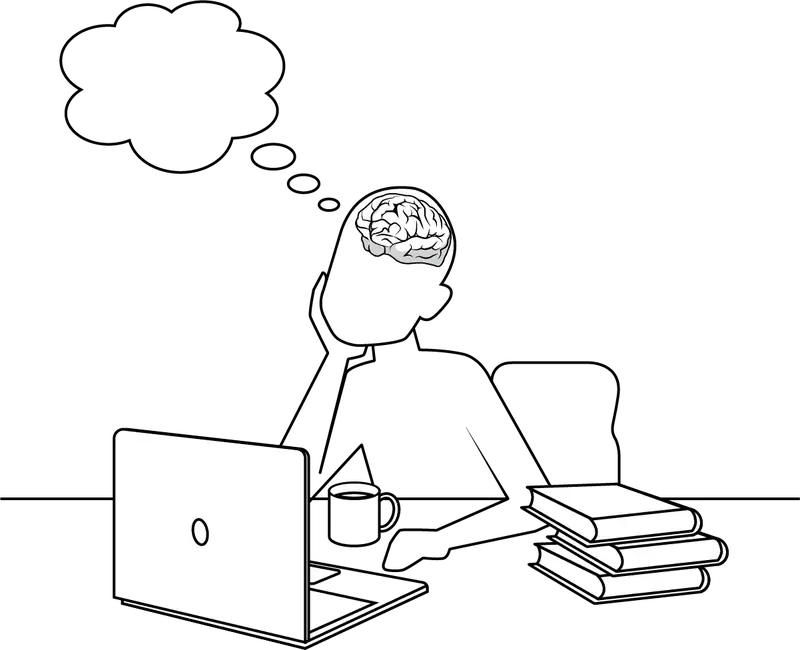
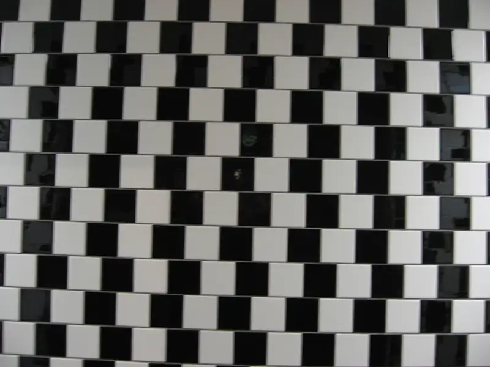
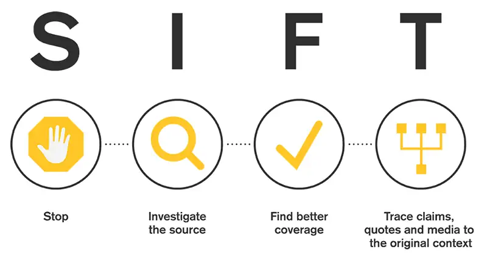

Chapter 2: Critical Thinking, Research, Reading, and Writing¶
Introduction¶

You have likely heard the term “critical thinking” and have probably been instructed to become a “good critical thinker.” Unfortunately, you are probably also unclear what exactly this means because the term is poorly defined and infrequently taught. “But I know how to think,” you might say, and that is certainly true. Critical thinking, however, is a specific skill. This chapter is an informal and practical guide to critical thinking and will also guide you in how to conduct research, reading, and writing for philosophy classes.
Critical thinking is a set of skills, habits, and attitudes that promote reflective, clear reasoning. Studying philosophy can be particularly helpful for developing good critical thinking skills, but often the connection between the two is not made clear. This chapter will approach critical thinking from a practical standpoint, with the goal of helping you become more aware of some of the pitfalls of everyday thinking and making you a better philosophy student.
While you may have learned research, reading, and writing skills in other classes—for instance, in a typical English composition course—the intellectual demands in a philosophy class are different. Here you will find useful advice about how to approach research, reading, and writing in philosophy.
2.1 The Brain Is an Inference Machine¶
Learning Objectives
By the end of this section, you will be able to:
- Describe the role of emotion in thought.
- Explain how cognitive systems produce inferences without conscious thought.
One of the first steps to becoming a more critical and reflective thinker is to understand how and why you are prone to making mistakes in thinking. These mistakes are not the result of a lack of intelligence but are a function of the way our minds work and how they naturally lead us astray.
From a biological perspective, we have been shaped by hundreds of thousands of years of evolution, which have primed our brains to become extremely effective inference machines. An inference is the mental process that allows us to draw conclusions from evidence. While we tend to think of inference as a deliberative and conscious process, we infer all kinds of things unconsciously, effortlessly, and immediately; in fact, most of sense perception is a kind of inference. Inference making has been crucial to human survival, but our conclusions are not always correct. By becoming aware of how our brains function to ward off threats and provide us with “cognitive ease,” or a feeling of well-being and comfort, we can begin to correct for and guard against faulty thinking.
The Brain’s Adaptive Ability to Plan Ahead¶
One insight of evolutionary biology is that every cell and organ in our body is adapted to its local environment for the purpose of making it more likely that our genes will survive into the next generation. Consequently, it’s helpful to think about the brain’s role in propagating our genes. Our brains facilitate our survival and promote our ability to find a partner and reproduce by using thought, calculation, prediction, and inference. For this reason, our natural and genetically primed ways of thinking do not necessarily serve the goals of philosophy, science, or truth.

Philosophical Caveats about “Brain Talk”¶
Before we get much further, note that it is important to be cautious when we talk about brains and minds, which are distinct concepts. In fact, the relationship between mind and brain is one of the central problems of metaphysics, known as the “mind-body problem,” which might just as well be called the “mind-brain problem.” Briefly stated, the mind-body problem is the problem of understanding the relationship between the organic gray and white matter in our skulls (the brain) and the range of conscious awareness (the mind). We know that the brain and central nervous system provide the physical basis for our thoughts, perceptions, emotions, imagination, and desire—in short, our entire mental life. But biology does not tell us what the relationship is between our private mental life and the neurological, electrochemical interactions that take place in the brain. Is the relationship of the mind to the brain like the relationship between lightning and electrical discharge or a rainbow and the refraction of light through water droplets? In other words, is “the mind” just the term we use to label certain kinds of brain activity? Some philosophers think so. However, mental activity is not easily associated with any specific brain activity. Additionally, there seems to be something about the subjective experience of our mental life that is lost when we attempt to explain it fully in terms of brain activity. So other philosophers maintain that the mind is something different from the brain. Nonetheless, the mind and the brain are closely and somewhat mysteriously connected. As a result, it can be helpful to use the resources of psychology and cognitive science (the study of the brain’s processes) to help us understand how to become better thinkers. We can think of the resources from psychology and cognitive science as providing us with a description of how the brain actually behaves. By contrast, when we study critical thinking, we are interested in how we ought to think. Being aware of how we do think may help us devise effective strategies for how we ought to think, but we should understand that the descriptions provided by psychology are not determinative. In this chapter, we explore psychological findings that can help you become more reflective about the ways your thinking can go wrong.
Connections
Read more about the nature of the mind and the mind-body problem in the chapter on metaphysics.
Representation as Projection¶
While you may consider thinking to be made up of ideas or thoughts, philosophers and cognitive scientists use the term representation to describe the basic elements of thinking. Representations are information-bearing units of thought. This notion of representation can be traced back to Aristotle and has played a significant role in the history of philosophy, but in contemporary philosophy the term representation is more precise. When we think about things, whether through perception, imagination, memory, or desire, we represent those things. What is represented may be something present and real, or it may be fictitious, imagined in the future, or remembered from the past. Representations may even be unconscious. That is, the mind may have some defined content that is directed toward an object without the person being aware that they have produced such a representation.
During the process of representation, even in a relatively simple case of visual perception, the brain makes a complex set of inferences. For instance, consider the checkerboard below. You might imagine that when you perceive something like a checkerboard, your brain passively takes a mental picture of the grid. In this analogy, the eye functions like the lens of a camera, and the brain develops the picture to present to the mind. But there are several problems with this model. First, where is the picture in your brain? Who is viewing the picture in your head? There are further problems with the camera analogy that can be revealed when we examine optical illusions. Look at the checkered set of squares in Figure 2.2. Are the horizontal lines parallel?

In fact, the horizontal lines are parallel, but unless you look at the image from the side, it is impossible to visualize this. There are countless examples of these types of perceptual illusions. We represent the world outside as a stable picture that is completely filled in, in full focus, and uniformly colored. In reality, our visual field is limited and hazy around the edges, and colors change dramatically depending on lighting conditions, distance, movement, and a host of other factors. In fact, your brain is not passively capturing the world, like a camera, but is actively projecting the world so that it makes sense to you.
Neuroscientist David Eagleman (2011) uses the analogy of the front page of a newspaper to describe how perception works. The front page is a representation of the world’s events for a given day. Of course, it does not present a full or complete picture of the world, but a summary intended to highlight the events of consequence, those that have changed, and those that we are most likely to care about. Like a newspaper editor, your brain is working overtime to project an image of the world based on what is relevant to your survival. You unconsciously adjust the images you perceive to give you the impression that they are far away, nearby, moving, and so forth. Instead of the fully formed, three-dimensional image of the world we seem to see, we actually perceive a kind of sketch, highlighting what we need to know to navigate safely in our environment and obtain what we need. You probably think that sense perception is the clearest and most certain way you can know the world around you. As the adage says, “Seeing is believing.” To become a better critical thinker, however, you will need to become skeptical of some of your basic beliefs. There are times when you absolutely should not believe your lying eyes.
Emotions and Reason: Homeostasis and Allostasis¶
In addition to the editorial license of mental representation, thinking is not always as rational as we imagine. The neuroscientist Antonio Damasio (1994) was one of the first to popularize the notion that rational thought is tempered by emotions. He is critical of what he perceives as the philosophical bias against emotion in the history of philosophy. In Descartes’ Error, he says modern philosophers have neglected the role of emotions in thought, imagining that the goal of rational thinking is to eliminate the influence of emotions. Instead, his years of clinical work with patients revealed to him that emotions cannot be separated from reason. Our most rational thoughts are, in fact, guided, informed, and influenced by emotions. According to Damasio, reasoning and intelligence function best when we care about something. Without feelings, says Damasio, we are less rational, not more rational.
Damasio (1994) explains that emotions serve to maintain homeostasis in the brain through the chemical messengers known as neurotransmitters. Homeostasis is the biological tendency to find a neutral state of equilibrium (the word stasis means “standing still,” and homeo means “same or similar”). This process relies on a feedback loop where current bodily states are monitored, observed, and then altered to bring the body back into balance. Most homeostatic processes in the body are unconscious, but emotions are linked to conscious awareness. For instance, when your blood sugar is low and your body needs calories, there is a series of chemical processes that give rise to the feeling of hunger. This is a conscious signal that you need to eat; it promotes behavior that ensures survival. Similarly, a rustling sound in the bushes at night will trigger a series of physiological responses (heightened senses, increased heart rate, pupil dilation, etc.) that correspond to the feeling of fear and promote behaviors, such as fight or flight, that are necessary for survival. What Damasio demonstrates is that emotions have their own feedback mechanism, so that an idea or image can generate physiological responses even in the absence of an external stimulus. Because emotional responses and conscious thought are closely linked, decision-making can be influenced by this emotional-physiological feedback mechanism. Our thinking can go astray because we are afraid of bad outcomes, and that fear dominates a more rational calculation about which course of action is most beneficial (1994, 172–175).
In addition to maintaining equilibrium, the brain also anticipates future events and circumstances by projecting likely scenarios based on a catalog of past experiences and concepts generated through social norms and social interactions. The process of regulation that prepares the body to anticipate future needs before they arise is called allostasis (allo means “other or different”). Psychologist Lisa Feldman Barrett (2017) explains that the brain stores neural pathways that are triggered by external or internal stimuli to provide the closest match to the current situation. The neural pathways form a kind of template of action, promoting behavior like increased heart rate, pupil dilation, or motion. Feelings are a goal-oriented response to certain situations: they prepare us to behave and react in certain ways that promote what is beneficial to the body and sharpen and shape our awareness of the world.
In summary, the brain makes inferences about the world through perceptions, emotions, and concepts that are largely unconscious and deeply ingrained in our psyches. This process allows us to navigate fluidly and accurately through a world with so many and varied stimuli. Our reactions to stimuli are partially homeostatic, meaning that the body tends to bring itself back into an optimal state of equilibrium, and partially allostatic, meaning that the body prepares for and anticipates future situations. Together, these impulses construct a picture of the world that we experience seamlessly and dynamically. Our experience is far more complicated than the crude mental model we imagine. We are projecting and constructing the world we experience as much as we are recording and viewing it. And that fact has important consequences for the kind of reflective and critical thought we ought to engage in when we try to think clearly about the world.
The Evolutionary Advantage of Shortcuts¶
Human beings have evolved to navigate the world most effectively and efficiently by engaging conscious awareness only when necessary. For that reason, you can walk through the grocery store while thinking about what you are going to cook for dinner. You do not have to consciously think about where to go, how to slow down to make way for other people, or how hard to push the shopping cart so that it maintains momentum in front of you even as its weight changes as you add groceries to the basket. All that biomechanical activity can be outsourced to unconscious mechanisms as you scan your shopping list. The brain is quite good at engaging in habitual activities without the assistance of conscious thought. And that is a good thing because conscious thought is expensive in energy terms. Consider the picture that follows.
You are probably immediately able to provide complex inferences about this picture, such as the woman is worried, concerned, or anxious about something. The inferences you make about this image are easy, fast, and complex. They are driven by the kind of emotional and conceptual thought processes that are unconscious and efficient. While these inferences are quick and easy, you may also be aware that they are provisional without more information. Given more data about the circumstances surrounding this picture, you might revise your perception about what is going on. This is exactly the sort of thinking that drives the emotional projections discussed in the previous section.
A different type of thinking is required to solve a math problem. The following example comes from psychologist Daniel Kahneman’s book Thinking Fast and Slow (2013). Try to solve the following in your head:
24 × 14 =
Do you know the answer? For most people, multiplying two-digit numbers without pen and paper (or a calculator) is quite difficult. You might need perhaps 10 or 20 seconds of effortful thinking to solve the problem in your head since you do not have the unconscious mechanisms to do so automatically. Long-term social and evolutionary pressures have shaped our brains to find efficient solutions to complex questions about facial expressions. The same cannot be said for math problems. Knowing the solution to a math problem may be useful, but it is not the sort of thing generally required for survival and reproduction. On the other hand, quickly reading other people’s emotions is at times vital for survival. There are other interesting differences between these two kinds of thinking. While it is difficult to solve the math problem, once you solve it, you can be 100 percent certain the answer is correct. By contrast, it is easy to generate a story about facial expressions, but this story is highly susceptible to error, bias, and stereotyping. As a result, critical thinkers should be careful not to jump to the first, most obvious solution.
Energy Demands on Deliberate Thinking¶
Solving a math problem requires rational thought and effort. When we engage in rational thought, our brains use up precious energy stores that may be required for the maintenance of the body. Because evolutionary pressures seek to keep us alive long enough to pass our genes to the next generation, we have a biological tendency to avoid effortful thinking. In a sense, it is evolutionarily wise to be lazy.
The resources demanded by conscious thought can be understood in terms of the familiar notion of “attention.” When a task requires significant attention, it places increased energy demands on the brain. Periods of high-attention activity can be stressful, as the body increases blood flow to the brain, delivering more glucose and oxygen for increased mental activity. Additionally, attention is limited and focused on specific tasks. Consider the “selective attention test” developed by Daniel Simons and Christopher Chabris. Watch the video below and see how you perform on this test.
Video: Selective Attention Test
How many passes did you count? Did you miss anything in the process? When our attention is focused on a novel and complex task, we become less aware of other stimuli outside the specific area of focus. Additionally, we may become fatigued, stressed, or anxious while engaged in paying close attention. Not surprisingly, our brains prefer automated shortcuts.
Heuristics and Learning¶
Kahneman (2013) calls these mental shortcuts heuristics, or rules of thumb for drawing inferences. Problem-solving with heuristics is largely unconscious, automated, effortless, and efficient, but it is not always correct. Rational thinking or computation requires conscious attention and effort and may not even be possible without some practice. We are forced to engage in effortful thinking when confronted with something new and possibly dangerous—or even with something slightly outside of our normal routine. For example, you have probably driven home from work or school along a familiar route on “autopilot,” preoccupied with your thoughts. Maybe you have even gotten home and felt as if you cannot remember how you got there. By contrast, you have probably experienced the stress of navigating a new, unfamiliar city. In the first case, navigation can be carried out using easy, largely automatic processing, whereas in the second case, navigation requires the intense resources of active attention and rational calculation.
Sometimes complex activities can become effortless, but unlike when we are on “automatic pilot,” such activities feel pleasant and fulfilling. When you become fully immersed in a complex activity to the point at which it becomes effortless, you have entered the state of “flow” (Csikszentmihalyi 2008).
Flow states are possible only for someone who has achieved some level of proficiency at a task. They are characterized by intense concentration and awareness as well as a sense of personal control or agency, but they are pleasurable because the challenge of engaging in the task is commensurate with your ability. By contrast, a novice may find the same tasks stressful and frustrating. This phenomenon can be illustrated using the notion of the “learning curve” that describes how a novice grows in proficiency.
What this means is that a person may be able to rely on intuitions, gut reactions, and other automatic responses in a field in which they are an expert, but the novice should be skeptical of these methods of thinking. As a novice, your mental heuristics are frequently faulty, so you are susceptible to prejudice, implicit bias, and error.
Consider the case of buying a car. Someone who is deeply familiar with the automobile market as either a buyer or a seller may be able to estimate the true value of a car easily, but the average person would need to do a great deal of research to arrive at a true estimate. Because of the effort required for nonexperts to appraise car value, they are easily influenced by dealer incentives, marked-up list prices, financing options, and other tricks of the trade. Given that we are all susceptible to these types of errors, it seems like a good idea to try to become more self-aware and critical and not rely exclusively on gut reactions or intuitions when encountering new material. Since you are probably a novice in philosophy if you are reading this textbook, you ought to be suspicious of your gut reactions to and intuitions about philosophical questions. Keep an open mind, and don’t assume you already understand the philosophical problems you will encounter in the chapters that follow. Being open to new ideas and allowing yourself to admit some degree of ignorance are important first steps in becoming a better thinker.
Heuristics and Substitution in Decision-Making¶
The cognitive biases that we will examine in the next section are based on a more fundamental “substitution heuristic.” This term describes our tendency to answer a difficult question or problem by substituting it with an easier question to answer. While substitution often results in an incorrect or inappropriate response, it gives us a sense of satisfaction or “cognitive ease” in thinking we have solved a problem. For instance, when you are asked to evaluate something complex and uncertain, like the future value of an investment or the political prospects of a politician, you are likely to substitute that complex calculation for an easier one. In particular, you may substitute your positive or negative feelings toward the politician or the investment product. But your feelings are likely to be guided by your preconceptions.
When the brain defaults to heuristics that produce a less-than-optimal result or even an incorrect decision, it is operating with a cognitive bias. A cognitive bias is a pattern of “quick” thinking based on the “rule of thumb.” A person operating under a cognitive bias does not use logic or careful reasoning to arrive at a conclusion. Cognitive biases are like perceptual illusions. Just like perceptual illusions, cognitive biases are the result of the natural and, ordinarily, efficient operation of the brain. Even though mental heuristics often work perfectly well to help give us an estimation of reality without the mental effort required to generate a more comprehensive picture, cognitive biases are the result of misleading and faulty patterns that arise from this process.
2.2 Overcoming Cognitive Biases and Engaging in Critical Reflection¶
Learning Objectives
By the end of this section, you will be able to:
- Label the conditions that make critical thinking possible.
- Classify and describe cognitive biases.
- Apply critical reflection strategies to resist cognitive biases.
To resist the potential pitfalls of cognitive biases, we have taken some time to recognize why we fall prey to them. Now we need to understand how to resist easy, automatic, and error-prone thinking in favor of more reflective, critical thinking.
Critical Reflection and Metacognition¶
To promote good critical thinking, put yourself in a frame of mind that allows critical reflection. Recall from the previous section that rational thinking requires effort and takes longer. However, it will likely result in more accurate thinking and decision-making. As a result, reflective thought can be a valuable tool in correcting cognitive biases. The critical aspect of critical reflection involves a willingness to be skeptical of your own beliefs, your gut reactions, and your intuitions. Additionally, the critical aspect engages in a more analytic approach to the problem or situation you are considering. You should assess the facts, consider the evidence, try to employ logic, and resist the quick, immediate, and likely conclusion you want to draw. By reflecting critically on your own thinking, you can become aware of the natural tendency for your mind to slide into mental shortcuts.
This process of critical reflection is often called metacognition in the literature of pedagogy and psychology. Metacognition means thinking about thinking and involves the kind of self-awareness that engages higher-order thinking skills. Cognition, or the way we typically engage with the world around us, is first-order thinking, while metacognition is higher-order thinking. From a metacognitive frame, we can critically assess our thought process, become skeptical of our gut reactions and intuitions, and reconsider our cognitive tendencies and biases.
To improve metacognition and critical reflection, we need to encourage the kind of self-aware, conscious, and effortful attention that may feel unnatural and may be tiring. Typical activities associated with metacognition include checking, planning, selecting, inferring, self-interrogating, interpreting an ongoing experience, and making judgments about what one does and does not know (Hackner, Dunlosky, and Graesser 1998). By practicing metacognitive behaviors, you are preparing yourself to engage in the kind of rational, abstract thought that will be required for philosophy.
Good study habits, including managing your workspace, giving yourself plenty of time, and working through a checklist, can promote metacognition. When you feel stressed out or pressed for time, you are more likely to make quick decisions that lead to error. Stress and lack of time also discourage critical reflection because they rob your brain of the resources necessary to engage in rational, attention-filled thought. By contrast, when you relax and give yourself time to think through problems, you will be clearer, more thoughtful, and less likely to rush to the first conclusion that leaps to mind. Similarly, background noise, distracting activity, and interruptions will prevent you from paying attention. You can use this checklist to try to encourage metacognition when you study:
- Check your work.
- Plan ahead.
- Select the most useful material.
- Infer from your past grades to focus on what you need to study.
- Ask yourself how well you understand the concepts.
- Check your weaknesses.
- Assess whether you are following the arguments and claims you are working on.
Cognitive Biases¶
In this section, we will examine some of the most common cognitive biases so that you can be aware of traps in thought that can lead you astray. Cognitive biases are closely related to informal fallacies. Both fallacies and biases provide examples of the ways we make errors in reasoning.
Connections
See the chapter on logic and reasoning for an in-depth exploration of informal fallacies.
Watch the video to orient yourself before reading the text that follows.
Video: Cognitive Biases 101, with Peter Bauman
Confirmation Bias¶
One of the most common cognitive biases is confirmation bias, which is the tendency to search for, interpret, favor, and recall information that confirms or supports your prior beliefs. Like all cognitive biases, confirmation bias serves an important function. For instance, one of the most reliable forms of confirmation bias is the belief in our shared reality. Suppose it is raining. When you first hear the patter of raindrops on your roof or window, you may think it is raining. You then look for additional signs to confirm your conclusion, and when you look out the window, you see rain falling and puddles of water accumulating. Most likely, you will not be looking for irrelevant or contradictory information. You will be looking for information that confirms your belief that it is raining. Thus, you can see how confirmation bias—based on the idea that the world does not change dramatically over time—is an important tool for navigating in our environment.
Unfortunately, as with most heuristics, we tend to apply this sort of thinking inappropriately. One example that has recently received a lot of attention is the way in which confirmation bias has increased political polarization. When searching for information on the internet about an event or topic, most people look for information that confirms their prior beliefs rather than what undercuts them. The pervasive presence of social media in our lives is exacerbating the effects of confirmation bias since the computer algorithms used by social media platforms steer people toward content that reinforces their current beliefs and predispositions. These multimedia tools are especially problematic when our beliefs are incorrect (for example, they contradict scientific knowledge) or antisocial (for example, they support violent or illegal behavior). Thus, social media and the internet have created a situation in which confirmation bias can be “turbocharged” in ways that are destructive for society.
Confirmation bias is a result of the brain’s limited ability to process information. Peter Wason (1960) conducted early experiments identifying this kind of bias. He asked subjects to identify the rule that applies to a sequence of numbers—for instance, 2, 4, 8. Subjects were told to generate examples to test their hypothesis. What he found is that once a subject settled on a particular hypothesis, they were much more likely to select examples that confirmed their hypothesis rather than negated it. As a result, they were unable to identify the real rule (any ascending sequence of numbers) and failed to “falsify” their initial assumptions. Falsification is an important tool in the scientist’s toolkit when they are testing hypotheses and is an effective way to avoid confirmation bias.
In philosophy, you will be presented with different arguments on issues, such as the nature of the mind or the best way to act in a given situation. You should take your time to reason through these issues carefully and consider alternative views. What you believe to be the case may be right, but you may also fall into the trap of confirmation bias, seeing confirming evidence as better and more convincing than evidence that calls your beliefs into question.
Anchoring Bias¶
Confirmation bias is closely related to another bias known as anchoring. Anchoring bias refers to our tendency to rely on initial values, prices, or quantities when estimating the actual value, price, or quantity of something. If you are presented with a quantity, even if that number is clearly arbitrary, you will have a hard time discounting it in your subsequent calculations; the initial value “anchors” subsequent estimates. For instance, Tversky and Kahneman (1974) reported an experiment in which subjects were asked to estimate the number of African nations in the United Nations. First, the experimenters spun a wheel of fortune in front of the subjects that produced a random number between 0 and 100. Let’s say the wheel landed on 79. Subjects were asked whether the number of nations was higher or lower than the random number. Subjects were then asked to estimate the real number of nations. Even though the initial anchoring value was random, people in the study found it difficult to deviate far from that number. For subjects receiving an initial value of 10, the median estimate of nations was 25, while for subjects receiving an initial value of 65, the median estimate was 45.
In the same paper, Tversky and Kahneman described the way that anchoring bias interferes with statistical reasoning. In a number of scenarios, subjects made irrational judgments about statistics because of the way the question was phrased (i.e., they were tricked when an anchor was inserted into the question). Instead of expending the cognitive energy needed to solve the statistical problem, subjects were much more likely to “go with their gut,” or think intuitively. That type of reasoning generates anchoring bias. When you do philosophy, you will be confronted with some formal and abstract problems that will challenge you to engage in thinking that feels difficult and unnatural. Resist the urge to latch on to the first thought that jumps into your head, and try to think the problem through with all the cognitive resources at your disposal.
Availability Heuristic¶
The availability heuristic refers to the tendency to evaluate new information based on the most recent or most easily recalled examples. The availability heuristic occurs when people take easily remembered instances as being more representative than they objectively are (i.e., based on statistical probabilities). In very simple situations, the availability of instances is a good guide to judgments. Suppose you are wondering whether you should plan for rain. It may make sense to anticipate rain if it has been raining a lot in the last few days since weather patterns tend to linger in most climates. More generally, scenarios that are well-known to us, dramatic, recent, or easy to imagine are more available for retrieval from memory. Therefore, if we easily remember an instance or scenario, we may incorrectly think that the chances are high that the scenario will be repeated. For instance, people in the United States estimate the probability of dying by violent crime or terrorism much more highly than they ought to. In fact, these are extremely rare occurrences compared to death by heart disease, cancer, or car accidents. But stories of violent crime and terrorism are prominent in the news media and fiction. Because these vivid stories are dramatic and easily recalled, we have a skewed view of how frequently violent crime occurs.
Tribalism¶
Another more loosely defined category of cognitive bias is the tendency for human beings to align themselves with groups with whom they share values and practices. The tendency toward tribalism is an evolutionary advantage for social creatures like human beings. By forming groups to share knowledge and distribute work, we are much more likely to survive. Not surprisingly, human beings with pro-social behaviors persist in the population at higher rates than human beings with antisocial tendencies. Pro-social behaviors, however, go beyond wanting to communicate and align ourselves with other human beings; we also tend to see outsiders as a threat. As a result, tribalistic tendencies both reinforce allegiances among in-group members and increase animosity toward out-group members.
Tribal thinking makes it hard for us to objectively evaluate information that either aligns with or contradicts the beliefs held by our group or tribe. This effect can be demonstrated even when in-group membership is not real or is based on some superficial feature of the person—for instance, the way they look or an article of clothing they are wearing. A related bias is called the bandwagon fallacy. The bandwagon fallacy can lead you to conclude that you ought to do something or believe something because many other people do or believe the same thing. While other people can provide guidance, they are not always reliable. Furthermore, just because many people believe something doesn’t make it true. Watch the video below to improve your “tribal literacy” and understand the dangers of this type of thinking.
Video: The Dangers of Tribalism, Kevin deLaplante
Sunk Cost Fallacy¶
Sunk costs refer to the time, energy, money, or other costs that have been paid in the past. These costs are “sunk” because they cannot be recovered. The sunk cost fallacy is thinking that attaches a value to things in which you have already invested resources that is greater than the value those things have today. Human beings have a natural tendency to hang on to whatever they invest in and are loath to give something up even after it has been proven to be a liability. For example, a person may have sunk a lot of money into a business over time, and the business may clearly be failing. Nonetheless, the businessperson will be reluctant to close shop or sell the business because of the time, money, and emotional energy they have spent on the venture. This is the behavior of “throwing good money after bad” by continuing to irrationally invest in something that has lost its worth because of emotional attachment to the failed enterprise. People will engage in this kind of behavior in all kinds of situations and may continue a friendship, a job, or a marriage for the same reason—they don’t want to lose their investment even when they are clearly headed for failure and ought to cut their losses.
A similar type of faulty reasoning leads to the gambler’s fallacy, in which a person reasons that future chance events will be more likely if they have not happened recently. For instance, if I flip a coin many times in a row, I may get a string of heads. But even if I flip several heads in a row, that does not make it more likely I will flip tails on the next coin flip. Each coin flip is statistically independent, and there is an equal chance of turning up heads or tails. The gambler, like the reasoner from sunk costs, is tied to the past when they should be reasoning about the present and future.
There are important social and evolutionary purposes for past-looking thinking. Sunk-cost thinking keeps parents engaged in the growth and development of their children after they are born. Sunk-cost thinking builds loyalty and affection among friends and family. More generally, a commitment to sunk costs encourages us to engage in long-term projects, and this type of thinking has the evolutionary purpose of fostering culture and community. Nevertheless, it is important to periodically reevaluate our investments in both people and things.
In recent ethical scholarship, there is some debate about how to assess the sunk costs of moral decisions. Consider the case of war. Just-war theory dictates that wars may be justified in cases where the harm imposed on the adversary is proportional to the good gained by the act of defense or deterrence. It may be that, at the start of the war, those costs seemed proportional. But after the war has dragged on for some time, it may seem that the objective cannot be obtained without a greater quantity of harm than had been initially imagined. Should the evaluation of whether a war is justified estimate the total amount of harm done or prospective harm that will be done going forward (Lazar 2018)? Such questions do not have easy answers.
Table 2.1 summarizes these common cognitive biases.
Table 2.1 Common Cognitive Biases
| Bias | Description | Example |
|---|---|---|
| Confirmation bias | The tendency to search for, interpret, favor, and recall information that confirms or supports prior beliefs | As part of their morning routine, a person scans news headlines on the internet and chooses to read only those stories that confirm views they already hold. |
| Anchoring bias | The tendency to rely on initial values, prices, or quantities when estimating the actual value, price, or quantity of something | When supplied with a random number and then asked to provide a number estimate in response to a question, people supply a number close to the random number they were initially given. |
| Availability heuristic | The tendency to evaluate new information based on the most recent or most easily recalled examples | People in the United States overestimate the probability of dying in a criminal attack, since these types of stories are easy to vividly recall. |
| Tribalism | The tendency for human beings to align themselves with groups with whom they share values and practices | People with a strong commitment to one political party often struggle to objectively evaluate the political positions of those who are members of the opposing party. |
| Bandwagon fallacy | The tendency to do something or believe something because many other people do or believe the same thing | Advertisers often rely on the bandwagon fallacy, attempting to create the impression that “everyone” is buying a new product, in order to inspire others to buy it. |
| Sunk cost fallacy | The tendency to attach a value to things in which resources have been invested that is greater than the value those things actually have | A business person continues to invest money in a failing venture, “throwing good money after bad.” |
| Gambler’s fallacy | The tendency to reason that future chance events will be more likely if they have not happened recently | Someone who regularly buys lottery tickets reasons that they are “due to win,” since they haven’t won once in twenty years. |
Think Like a Philosopher
As we have seen, cognitive biases are built into the way human beings process information. They are common to us all, and it takes self-awareness and effort to overcome the tendency to fall back on biases. Consider a time when you have fallen prey to one of the five cognitive biases described above. What were the circumstances? Recall your thought process. Were you aware at the time that your thinking was misguided? What were the consequences of succumbing to that cognitive bias?
Write a short paragraph describing how that cognitive bias allowed you to make a decision you now realize was irrational. Then write a second paragraph describing how, with the benefit of time and distance, you would have thought differently about the incident that triggered the bias. Use the tools of critical reflection and metacognition to improve your approach to this situation. What might have been the consequences of behaving differently? Finally, write a short conclusion describing what lesson you take from reflecting back on this experience. Does it help you understand yourself better? Will you be able to act differently in the future? What steps can you take to avoid cognitive biases in your thinking today?
2.3 Developing Good Habits of Mind¶
Learning Objectives
By the end of this section, you will be able to:
- Define epistemic humility and the Dunning-Kruger effect.
- Identify three strategies to increase the ability to think objectively.
- Analyze emotional responses to information.
One of the ways to respond to cognitive biases is to develop good habits of mind. There are no quick fixes or easy solutions to cognitive biases. Remember, these biases are a result of the way the brain works. Nevertheless, metacognition and critical reflection, as well as good mental habits, can help combat these natural tendencies in thought that otherwise leads us astray. The strategies outlined below can help you become a better philosopher. You should compare them with the methods philosophers use to arrive at truth, covered in Chapter 1.
Connections
See the introduction to philosophy chapter to learn more about how philosophers arrive at the truth.
Strive for Objectivity¶
We are likely to assume that our experience or our perspective is generally true for others. To be more objective in thinking about issues, problems, or values, we should actively engage in strategies that remove us from our naturally subjective mindset. In this section, we will explore several strategies for approaching philosophical problems with less subjective bias.
Abstract from Specific Circumstances¶
Most people’s point of view is based on generalizing from their specific circumstances and experiences. However, if your view of morality, consciousness, or free will is tied to notions that come from a specific time or location, then your view is not likely to be objective. Your personal experience has limitations when it comes to understanding what is going on in the world at large. To arrive at more general and representative notions, use your imagination to separate the specific properties of your experience from your worldview. This process of abstraction can make the concept appropriately general. For instance, if you wish to imagine a governing arrangement among citizens, you will probably default to the governmental organizations you are familiar with in your community, state, or nation. But these institutions differ from the way government works in other countries or in different eras of history. So when you think about justice in political organizations, it is important to imagine those not limited by your personal experience, moment in history, or location.
In some cases, however, the specific features of your experience are indispensable to the philosophical position you wish to take. In such instances, your specific experience provides critical information that needs to be preserved. For example, the prevailing views in philosophy as well as any other subject are biased in that they reflect the views of the dominant cultural group who wrote the texts. If you are a person who belongs to a nondominant or minority group or a group that has been historically marginalized, your personal experience may shed new light on a problem. In such cases, specific experience can help you, as well as others, reshape the general view so that it is more comprehensive and inclusive. In these cases, abstracting from the particular circumstances may not be useful.
Promote Alternative Points of View¶
Actively considering points of view contrary to your own is most useful in political or ethical areas of philosophy. But a similar strategy may also be useful in metaphysics or epistemology. For instance, when considering issues in metaphysics, you may believe that parts of experience—like consciousness, God, or free will—cannot be explained by the natural sciences. Or, conversely, you may think there is a scientific explanation for everything. When considering these views philosophically, try to actively promote the alternative point of view. Sometimes this strategy is called steelmanning the opposing argument. When you steelman an argument, you make the strongest possible case in favor of it. This is the opposite of strawmanning an argument, in which you construct a weaker version of the argument to easily defeat it. You may be tempted to strawman arguments you naturally disagree with, but you will become a better philosopher when you steelman those arguments instead.
Connections
Learn more about the strawman fallacy in the chapter on logic and reasoning.
Identify Counterexamples¶
Generating counterexamples is an effective way to test your own or others’ claims. A counterexample is an instance that renders an argument invalid by satisfying all the premises of the claim but demonstrating the conclusion is false. Suppose someone wants to argue that the only legitimate way to know something is to have direct experience of it. To produce a counterexample to this claim, we must imagine something that everyone knows is true but that would be impossible to experience directly. Here is an example: I know my mother was born. Clearly, given that I was born, I had a mother, and she, too, must have been born to have given birth to me. My mother’s birth necessarily preceded my birth by many years, so it would be impossible for me to have any direct experience of my mother’s birth. And yet, just as surely as I know I was born, I know that my mother was born. Counterexamples are powerful tools to use in evaluating philosophical arguments. If you practice using this tool, you will become a better critical thinker.
Connections
See the section on counterexamples in the chapter on logic and reasoning for more discussion of this topic.
Maintain Skepticism of Strong Emotions¶
While emotions play an important role in thinking, they can also cloud judgment. Strong reactions to claims made by philosophers, other students, your professor, or anyone else may prevent you from considering the argument objectively. You should be wary of any strong attachment or aversion you feel toward a philosophical claim. Emotions can guide us, but they may threaten our ability to objectively consider the arguments being made.
To respond to strong emotions, use the tools of metacognition to reflect on the source of those emotions and attempt to manage them. There may be good reasons for your emotions, but recognize that those reasons, not the emotions themselves, are philosophically relevant. Manage emotions by taking a step back from your personal investment in the issue and considering it from another perspective. Sometimes a short break can allow the immediate emotional reaction to subside. Sometimes imaginative strategies can help; for example, substitute the features of the problem that trigger strong emotions for features that are more neutral. This advice is not to suggest that emotions are harmful or have no place in philosophical thinking. Instead, the purpose of this strategy is to remind you that the way to derive meaning and guidance from your emotions is to reflect on them and think through the causes, origins, or reasons for the emotions.
Adopt Epistemic Humility¶
A final concept that is a critical component for becoming a better critical thinker is adopting a stance of epistemic humility. As we have already seen, our thinking can be clouded by cognitive biases. Additionally, our perspective on the world is always colored by our own experience and rooted in the particular place and time in which we live. Finally, even our best scientific knowledge of the universe explains only a fraction of it, and perhaps even less of our own experience. As a result, we should recognize these limitations of human knowledge and rein in our epistemic confidence. We should recognize that the knowledge we do possess is fragile, historical, and conditioned by a number of social and biological processes.
Question Yourself: Do I Really Know What I Think I Know?¶
We retain all sorts of beliefs from many different sources: memory, testimony, sense perception, and imagination. Some of these sources may be reliable, while others may not. Often, however, we forget the source of our beliefs and claim to “know” something simply because we have believed it for a long time. We may become very confident in believing something that never happened or did not happen in the way we remember it. In other cases, we may have been told something repeatedly, but the ultimate source of that information was unreliable. For instance, most people recommend wearing warm clothes outside when the temperature drops so that they do not “catch a cold.” This is the sort of wisdom that may have been passed down through generations, but it makes little sense from a medical standpoint. There are not many ways that getting a chill or even lowering the body temperature will lead to a respiratory infection. Colds are caused by viruses, not by a drop in temperature. Without thinking through the source of the belief that “if you get cold, you may catch a cold,” you end up believing something that is not true.
Be Aware of the Dunning-Kruger Effect¶
An even more pernicious form of epistemic overconfidence is revealed in the psychological phenomenon known as the Dunning-Kruger effect. David Dunning and Justin Kruger demonstrated a widespread illusion in which incompetent people or novices rate their own knowledge of a subject more highly than they ought to, while highly competent people or experts rate their knowledge slightly lower than they ought to. These findings do not mean that the experts considered themselves to be less competent than novices. In fact, experts are fairly accurate in rating their own knowledge. However, they tend to assume that everyone else has a similar level of expertise. By contrast, novices consider themselves to be far more competent in comparison to others and misrepresent their own incompetence, which can be a dangerous in many situations.
The lesson from the Dunning-Kruger effect is that you should be extremely wary when assessing your expertise about anything, but especially about something that is a new area of learning for you. The reality is that your intuitive sense of your own knowledge is likely to be inaccurate. It takes time to build expertise in a subject area, and the expert is more capable of assessing their own knowledge accurately.
2.4 Gathering Information, Evaluating Sources, and Understanding Evidence¶
Learning Objectives
By the end of this section, you will be able to:
- Identify four moves for fact-checking.
- Apply fact-checking to specific exercises.
Start with a Strong Foundation¶
When you are learning a new concept or writing a paper, you probably do some internet research to locate information about the topic. However, as you probably know, not all internet sources are reliable. Philosophy students are fortunate to have two online philosophy encyclopedias that provide excellent information about a wide array of topics. The Internet Encyclopedia of Philosophy provides good general topic coverage of the major areas of philosophy. The IEP is a traditional encyclopedia, and its articles are written for new students without a lot of prior knowledge. The Stanford Encyclopedia of Philosophy provides in-depth, up-to-date articles on a wide range of topics and includes both general and specific coverage. The articles in the Stanford Encyclopedia of Philosophy are well written, but they typically go into greater depth and sometimes include technical terms or information you will have to look up. These articles provide an excellent, free introduction to a wide range of specific topics in philosophy. As with all encyclopedia entries, students should start with the article itself and then move on to sources cited in the article. Think of these articles as an entry point into research.
Wherever possible, read articles and books written by philosophers on the topics you are interested in. You can usually find these resources at your college or university library. You may want to cast a wider net on the internet itself by tapping into YouTube channels, podcasts, and other websites that can help you understand philosophical issues or provide information for philosophy papers. However, be discriminating when selecting material. In this section, we will outline some tools and habits that can make you a better, more critically engaged online researcher.
Finally, many instructors in philosophy will encourage their students to engage only with the assigned texts in the class. This can be a valuable technique for learning philosophy since philosophical thinking is cultivated by serious, critical engagement with good philosophical writing. If you can learn to engage directly with primary sources (texts written by philosophers about philosophy), you will be a better philosophy student. However, we acknowledge that most students are accustomed to using the internet for research when they are learning something new. So this section is intended to provide some guidance for students who want to supplement their class readings with information gleaned from online sources.
The SIFT Method (Four Moves for Student Fact Checkers)¶
Information literacy scholar Michael Caulfield came to realize that the methods of research taught by librarians and information literacy educators often did not work well for students. Typically, students are encouraged to assess the quality of information using an acronym like CRAAP: currency, relevancy, authority, accuracy, and purpose. But these criteria are not always useful in spotting misinformation turned up through search engines. After all, many sources that provide misinformation appear current and relevant and are generated by organizations that appear to be authoritative while they conceal a hidden agenda.
To find out how students evaluate sources they find on Google, Caulfield relies on the empirical research of Sam Wineburg and Sarah Mcgrew (2016). The researchers compared the behavior of Stanford University students to trained fact-checkers at newspapers and magazines. Not surprisingly, the online fact-checkers used search engines more effectively. Based on this research, Caulfield developed his own protocol to make students better researchers.
The first thing to know about using a search engine like Google is that results are not ranked by authority, accuracy, or relevance. Internet companies are notoriously secretive about the algorithms (mathematical procedural rules) they use to generate search engine results, but we know that they prioritize paid advertisements, popularity, and web interconnectivity (the degree to which key words and links from a website are shared with other websites). Thus, websites interested in sharing misinformation can use the same search engine optimization tools that legitimate companies or media sources use to move up the ranks of search results. So you need to learn to use the search engine to your advantage. Caulfield recommends using the acronym SIFT, or the “four moves” of student fact checkers.

Stop¶
The first move reiterates something we have already discussed: to become a better critical thinker, slow down the quick and efficient thinking that leads to errors and engage in critical reflection and metacognition. By stopping, slowing down, or taking your time to allow for critical reflection, you will be using rational and reflective thinking to assess claims. Additionally, after some searching, you will want stop, return to your original source, and check its claims again. When you circle back after going down a bit of a rabbit hole, you will have a new perspective from which to evaluate these claims.
Investigate the Source¶
Next, investigate the source of your information. Internet searches will often lead you through a series of links, in which you jump from one document to another. Strive to understand this electronic paper trail. Who wrote each document? What are their credentials? You can prioritize academic sources, such as web pages of philosophy faculty members, and you can discount sites that aggregate student papers or provide content without clear authorship. But investigating authorship does not mean that you should just read the “About” page on a website. Rather, Wineburg and Mcgrew (2016) found that fact-checkers used search tools to check the reputation of the sites they were investigating, a move they called “reading laterally.” You do not have to spend a lot of time on the site itself. Instead, search reviews or critiques of the website and the authors on the site. Find out what other authoritative sources say about the site. Is this a website that is approved by other people you trust? Or do people you trust indicate that the website or its information are questionable?
Find Better Coverage¶
Check the claims and information on the site you are reading. What do other sources say about the same information? Is there other coverage on the same topic? This move is particularly important for controversial claims you might find on social media, where the original source is frequently obscured. Is this information being covered elsewhere, and does the coverage agree with what you have read? This move can help in evaluating your original source or gaining familiarity with the claims being made. If the claims by one source do not match up with what you are reading elsewhere, be skeptical.
Trace Claims, Quotes, and Media to the Original Context¶
Frequently, claims made on the internet are divorced from their original context. It is important to trace those claims back to the original source. This advice holds for online research in philosophy. You may discover a claim or quote about a philosopher that lacks context. To evaluate the claim, you need its original context, which will reveal whether the claim or quote was mischaracterized or portrayed in a misleading way. Look for citations, and then follow those citations to the original publication. If the source you have found does not have citations, then you will need to search key terms or phrases in quotation marks to see if you can locate the claim or quote using another method. Good academic sources ought to provide citations so you can verify the original source of the claim. If it is hard to verify a claim or quote, that should be a red flag to not trust the source making those claims or providing those quotes.
Think Like a Philosopher
Here are three examples of claims made online. Use the four moves to assess whether these claims are true. You have been provided with a screen capture of a headline, so you do not have links back to a website. Therefore, use search tools on the web to verify the claims being made. In each case, find a source that either verifies or debunks the claim. The source you use to verify or debunk the claim should be reputable and authoritative.
Mexico’s Border Wall
This post claims to be a picture of fencing from Mexico’s southern border. Is the photo accurate? Is this an image of Mexico’s southern border? Has the Mexican government constructed a wall to prevent the flow of migrants from across its southern border?
Smart Toilet?
This image was shared on the web. Is it a real product or satire?
Drilling Stonehenge?
2.5 Reading Philosophy¶
Learning Objectives
By the end of this section, you will be able to:
- Describe strategies for reading philosophy.
- Distinguish the goals of philosophical reading from other types of reading.
- Employ a three-part method for reading philosophy.
To be successful in a philosophy course, you must be able to read primary and secondary sources in philosophy. Many students in their first philosophy class struggle with the required readings. You may find yourself rereading a passage several times without having a clear notion of what the author is trying to say. Or you may get lost in the back-and-forth of arguments and counterarguments, forgetting which represent the author’s opinion. This is a common problem. Using the strategies described below, you can track the key claims and arguments in your reading. Eventually, you will reach the point where you can begin to reflect on, evaluate, and engage with the philosophical concepts presented.
Prepare to Read¶
Preparing your reading space will help you focus and improve the chances of retaining the reading material. Read at a table with a comfortable chair instead of on a couch or in a bed. Sitting up straight improves concentration. Have something to drink nearby, and avoid distractions, like TV or music with lyrics. Some people find it helpful to have a little bit of bustle around them (for example, you might choose to work in a café or library), while others find this distracting. Some people like music; others prefer silence. Find the setting that helps you concentrate.
Next, choose an annotation tool. You will need to write notes, underline, and flag portions of the reading, so use text you can alter whenever possible. If you are working with a printed text, use a pencil so that you can erase and rewrite notes in the margin. Many students use highlighters when reading text, but readers have a tendency to highlight too much, which makes the highlighting useless when you go back and reread. A better system is to write marginal notes or markers to flag and identify key passages. You can devise a simple coding system using symbols to identify different parts of a text: for example, main ideas or topics, examples, arguments, references to other philosophers, questions, and quotations to use in papers. If you are working with a digital text, there are many tools you can use to write notes and place markers in the text. OpenStax provides a useful annotation tool for its web-based textbooks, allowing you to create notes that link passages and even to review your notes all together. The purpose of annotation is to create a visual trail you can come back to for easy tracking of an argument. This will ensure you do not need to reread large portions of the text to find key information for studying or writing a paper. Annotations allow you to move quickly through a text, identifying key passages for quotes or citations, understanding the flow of the argument, and remembering the key claims or points made by the author.
Engaging with Philosophical Texts¶
The purpose of philosophical writing is to engage the reader in a sequence of thoughts that either present a problem to be considered, prompt reflection on previous ideas and works, or lead to some insight or enlightenment. Philosophy consists of ideas and arguments. Your goal is to engage with those ideas and arguments to arrive at your own understanding of the issues. You may critically engage with the author, or you may have your perspective changed by reading the author. In either case, your goal ought to be to reach a new understanding. This is somewhat different from writing in most other disciplines, in which the purpose may be to convey information, evoke emotions, tell a story, or produce aesthetic enjoyment. While engaging with philosophical ideas can be pleasurable and may involve understanding some basic information, the primary purpose of the writing is to engage thought and reflection. This means that you should read the work as fast or slow as you need to engage thoughtfully with it. The speed of reading will depend on how quickly you grasp the ideas and arguments presented or how familiar you are with the claims being made. It is not as important to read sequentially for plot or narrative; much more important is to follow the sequence of ideas and arguments. Consequently, it may make sense to cross-reference passages, jumping from one section to another to compare claims, and link ideas that appear in different places in the text.
Philosophical Methods at Work¶
Look for philosophical methods at work in your readings. Recall that philosophers use a variety of methods to arrive at truth, including conceptual analysis, logic, and the consideration of trade-offs. Philosophers may also draw on a variety of sources of evidence, including history, intuition, common sense, or empirical results from other disciplines or from experimental philosophy. In any case, most philosophical works will be attempting to develop a position through argumentation. Sources of evidence will be used to bolster premises for the purpose of reaching a desired conclusion. Additionally, the author may use a variety of methods to make an argument. If you can identify these methods, strategies, and sources of evidence, you will be able to better evaluate the text.
The Principle of Charity¶
The principle of charity is an interpretative principle that advises the reader to interpret the author’s statements in the most rational and best way possible. Sometimes a philosopher’s argument may be unclear or ambiguous. For example, philosophers from older historical periods may use terminology and expressions that are difficult for a modern reader to understand. In these cases, the reader should start from the assumption that the author is putting forward a rational, thoughtful view. The reader’s goal should be to understand that view in the best light possible. This does not mean that you should ignore difficulties or avoid criticizing the author. Rather, when you encounter difficulties, look for an interpretation that makes the most sense of what the author is saying. All the primary- and secondary-source authors you will read are smart, thoughtful people. Therefore, assume the author has a response to simple or obvious objections, and look for that response. Try to understand the work on its own terms, and then critically engage with the best version of that work.
Working with the Dialectic¶
The dialectical process that is common to many philosophical writings is initially confusing for many students. Dialectic, a method for discovering truth through dialogue, involves an exchange of ideas with the goal of arriving at a position that more accurately reflects the truth. In practical terms, philosophers will frequently move back and forth between the view they are advancing and competing views that they may or may not support. These alternative views may provide criticisms, or they may represent views that are common in philosophy. The author’s goal is to present alternative perspectives—in addition to their own—to demonstrate the range of perspectives on the problem. If one view emerges through this dialectical process, there is a greater chance that it has some share of the truth since it has survived the criticisms and contrary opinions of others.
When reading a philosophical work that uses a dialectical method, pay attention to tracking different strands of argument. Do not assume that every argument or claim in what you are reading is the considered opinion of the author. Rather, various claims may represent contrasting views that will eventually be rejected. Track the back-and-forth between views to grasp the thread of argument that the author endorses.
Pre-reading¶
Start your reading with a pre-read. This is a very useful practice when tackling academic works. So much information can be learned simply by reviewing the surrounding features of the article, book, or chapter. Spend some time reviewing these elements to grasp the context for what you are about to read. Start with these elements.
Title, Author, and Publication¶
What does the title and author tell you about the work? When was it written? Who has published the text—an academic press or a popular press? If you do not know this information, you may want to do some preliminary internet searches to try to find out. Where does this work fit into the author’s broader body of work? What can you learn or what do you know about the author? What are the author’s main contributions to philosophy?
Table of Contents and Bibliography¶
Develop a mental outline for the work by looking carefully at the table of contents, usually at the front of the book. For a shorter work, scan through the article, looking for section headings and breaks. If the headings are labeled, you may have enough information to track the general flow of the article just by reading them. If the headings are not helpful or there are no headings, quickly skim the first and last paragraph, and pick out topic sentences or words that indicate what individual paragraphs are about to get a sense of where the overall argument is going.
At this stage, you want to look at the bibliography or references. Depending on the length and style of the work, the reference list may be very long. As a novice, you may not be able to get much information from a bibliography, but as you become more familiar with your subject, you will get a sense from titles and authors in the bibliography about the perspective that informs this author’s writing.
First Read¶
You may need to read material more than once to become engaged in critical reflection. However, because you are planning to do multiple readings, do not linger too long on the first read. Move quickly and purposefully through the material with the goal of understanding the flow of the argument. Use the information you gleaned from pre-reading to fill in gaps in knowledge where possible, and flag places for follow-up.
Identify Key Claims¶
During the first read, you should identify the key claims in the text. In a traditional academic article, these claims ought to be highlighted in the introduction or abstract. In a book or historical work, these key claims may be harder to find. Look for sentences that introduce claims with expressions such as, “I aim to show,” “What this chapter will demonstrate,” or “The purpose of this work is.” Mark key claims so that you can come back to them easily. Ask yourself what the author is trying to say; what does the author hope the reader will take away from reading?
Identify Sources of Evidence and Methods of Argument¶
Look for the evidence the author is providing to support the key claims. What methods does the author use to generate this evidence? Is the author using logical argumentation? Are there thought experiments or other forms of conceptual analysis? Does the author provide empirical evidence to back up the claims? In the best-case scenario, evidence will be provided shortly before or after the claim is announced. However, sometimes evidence and claims are mixed together. During this stage, try to flag the dialectic in the argument. Is the author presenting their own view, a rival view, a criticism, or a supporting view?
Flag for Follow-Up¶
Use annotation flags to chart the course of the argument and claims being made. Use a simple notation system that works for you. But you should consider flagging things like thesis, definition, claim, evidence, argument, question, counterargument, objection, response, and so forth. Flagging should also be used to identify words or ideas you do not understand. When you are moving quickly, you may ask questions that you later understand, or you may flag something incorrectly and need to revise your notes. This is fine. You are engaged in a process of gradually becoming acquainted with the text.
Close Read¶
At this stage, you will read for thoughtful engagement with the ideas and arguments presented in the text. Now is when you critically reflect on, evaluate, and understand the author’s writing.
At this point, you should not move any more quickly than you can think alongside the author. Use this time to follow up on questions you posed during flagging. Look up terms; do some research on concepts you do not understand. You do not need to understand the article perfectly, but you should understand it well enough to think about it. If you have a good understanding of what you read, you will have something to say about the material after you finish reading it.
Reading slowly and actively involves asking the author questions: How does this claim follow from that one? Where is the evidence to support this assertion? Is the evidence adequate to support the claim being made? What are the implications of this claim? How does this idea fit with the overall emphasis on some other set of ideas? If something in the text does not sit well with you, try to articulate what is bothering you. Write a short objection in the margin. Even if you are not sure, try to work out why you do not agree with the author. The more you can articulate your concerns and think through your own reactions, the more you will understand the material and your own reaction to it.
The close reading is intended to prepare you for talking and writing about the author’s work. That means you are preparing yourself to do philosophy alongside and with the author. Hold yourself to the same standards to which you hold the author. Provide reasons for your claims, support your opinions with adequate evidence, and consider possible objections.
Read Like a Philosopher
Identify a reading from Chapter 1 (or another introductory reading from this course). This exercise will work best if the reading is a fairly short, primary source reading from someone who is doing philosophy. Follow the three-step method for reading:
- Pre-read
- Fast read with flagging
- Close read and revise flagging
Consider the following prompts in writing a short review of the article (no more than two paragraphs in length):
- Provide a brief synopsis of the argument and dialectical structure of the text.
- What are the primary claims that the author makes?
- What evidence does the author provide to support those claims?
- What methods does the author use to generate evidence or make arguments?
- Is the evidence adequate to support the claims the author makes?
- Where do you think the evidence falls short?
- Do you agree with the author’s claims?
- Where do you disagree, and why?
When you are writing philosophy papers, you should plan the structure of your argument in advance, spend time thinking about a thesis, and focus on an achievable aim relative to the length of your paper.
2.6 Writing Philosophy Papers¶
Learning Objectives
By the end of this section, you will be able to:
- Identify and characterize the format of a philosophy paper.
- Create thesis statements that are manageable and sufficiently specific.
- Collect evidence and formulate arguments.
- Organize ideas into a coherent written presentation.
This section will provide some practical advice on how to write philosophy papers. The format presented here focuses on the use of an argumentative structure in writing. Different philosophy professors may have different approaches to writing. The sections below are only intended to give some general guidelines that apply to most philosophy classes.
Identify Claims¶
The key element in any argumentative paper is the claim you wish to make or the position you want to defend. Therefore, take your time identifying claims, which is also called the thesis statement. What do you want to say about the topic? What do you want the reader to understand or know after reading your piece? Remember that narrow, modest claims work best. Grand claims are difficult to defend, even for philosophy professors. A good thesis statement should go beyond the mere description of another person’s argument. It should say something about the topic, connect the topic to other issues, or develop an application of some theory or position advocated by someone else. Here are some ideas for creating claims that are perfectly acceptable and easy to develop:
- Compare two philosophical positions. What makes them similar? How are they different? What general lessons can you draw from these positions?
- Identify a piece of evidence or argument that you think is weak or may be subject to criticism. Why is it weak? How is your criticism a problem for the philosopher’s perspective?
- Apply a philosophical perspective to a contemporary case or issue. What makes this philosophical position applicable? How would it help us understand the case?
- Identify another argument or piece of evidence that might strengthen a philosophical position put forward by a philosopher. Why is this a good argument or piece of evidence? How does it fit with the philosopher’s other claims and arguments?
- Consider an implication (either positive or negative) that follows from a philosopher’s argument. How does this implication follow? Is it necessary or contingent? What lessons can you draw from this implication (if positive, it may provide additional reasons for the argument; if negative, it may provide reasons against the argument)?
Think Like a Philosopher
The following multiple-choice exercises will help you identify and write modest, clear philosophical thesis statements. A thesis statement is a declarative statement that puts forward a position or makes a claim about some topic.
-
Which of the following is a declarative statement that puts forward a position or claim?
a. How does Aristotle think virtue is necessary for happiness?
b. Is happiness the ultimate goal of human action?
c. Whether or not virtue is necessary for happiness.
d. Aristotle argues that happiness is the ultimate good of human action and virtue is necessary for happiness.
-
Which of the following declarative statements goes beyond mere description?
a. René Descartes argues that the soul or mind is the essence of the human person.
b. Descartes shows that all beliefs and memories about the external world could be false.
c. Some people think that Descartes is a skeptic, but I will show that he goes beyond skepticism.
d. In the meditations, Descartes claims that the mind and body are two different substances.
-
Which of the following statements proposes a comparison between two philosophical views?
a. Descartes says that the mind is a substance that is distinct from the body, but I disagree.
b. Contemporary psychology has shown that Descartes is incorrect to think that human beings have free will and that the mind is something different from the brain.
c. Thomas Hobbes’s view of the soul is materialistic, whereas Descartes’s view of the soul is nonphysical. In this paper, I will examine the differences between these two views.
-
Which of the following statements identifies a weakness in a philosopher’s argument and proposes a criticism of that argument?
a. John Stuart Mill reasons that utilitarian judgments can be based on qualitative differences as well as the quantity of pleasure, but ultimately any qualitative difference must result in a difference in the quantity of pleasure.
b. Mill’s approach to utilitarianism differs from Bentham’s by introducing qualitative distinctions among pleasures, where Bentham only considers the quantitative aspects of pleasure.
c. J. S. Mill’s approach to utilitarianism aligns moral theory with the history of ethics because he allows qualitative differences in moral judgments.
-
Which of the following is an example of a statement that applies a philosophical idea to a contemporary issue or problem?
a. Rawls’s liberty principle ensures that all people have a basic set of freedoms that are important for living a full life.
b. The US Bill of Rights is an example of Rawls’s liberty principle because it lists a set of basic freedoms that are guaranteed for all people.
c. While many people may agree that Rawls’s liberty principle applies to all citizens of a particular country, it is much more controversial to extend those same basic freedoms to immigrants, including those classified by the government as permanent residents, legal immigrants, illegal immigrants, and refugees.
[ANS: 1.d 2.c 3.c 4.a 5.c]
Write Like a Philosopher
Use the following templates to write your own thesis statement by inserting a philosopher, claim, or contemporary issue:
- [Name of philosopher] holds that [claim], but [name of another philosopher] holds that [another claim]. In this paper, I will identify reasons for thinking [name of philosopher]’s position is more likely to be true.
- [Name of philosopher] argues that [claim]. In this paper, I will show how this claim provides a helpful addition to [contemporary issue].
- When [name of philosopher] argues in favor of [claim], they rely on [another claim] that is undercut by contemporary science. I will show that if we modify this claim in light of contemporary science, we will strengthen or weaken [name of philosopher]’s argument.
Collect Evidence and Build Your Case¶
Once you have identified your thesis statement or primary claim, collect evidence (by returning to your readings) to compose the best possible argument. As you assemble the evidence, you can think like a detective or prosecutor building a case. However, you want a case that is true, not just one that supports your position. So you should stay open to modifying your claim if it does not fit the evidence. If you need to do additional research, follow the guidelines presented earlier to locate authoritative information.
If you cannot find evidence to support your claim but still feel strongly about it, you can try to do your own philosophical thinking using any of the methods discussed in this chapter or in Chapter 1. Imagine counterexamples and thought experiments that support your claim. Use your intuitions and common sense, but remember that these can sometimes lead you astray. In general, common sense, intuitions, thought experiments, and counterexamples should support one another and support the sources you have identified from other philosophers. Think of your case as a structure: you do not want too much of the weight to rest on a single intuition or thought experiment.
Consider Counterarguments¶
Philosophy papers differ from typical argumentative papers in that philosophy students must spend more time and effort anticipating and responding to counterarguments when constructing their own arguments. This has two important effects: first, by developing counterarguments, you demonstrate that you have sufficiently thought through your position to identify possible weaknesses; second, you make your case stronger by taking away a potential line of attack that an opponent might use. By including counterarguments in your paper, you engage in the kind of dialectical process that philosophers use to arrive at the truth.
Accurately Represent Source Material¶
It is important to represent primary and secondary source material as accurately as possible. This means that you should consider the context and read the arguments using the principle of charity. Make sure that you are not strawmanning an argument you disagree with or misrepresenting a quote or paraphrase just because you need some evidence to support your argument. As always, your goal should be to find the most rationally compelling argument, which is the one most likely to be true.
Organize Your Paper¶
Academic philosophy papers use the same simple structure as any other paper and one you likely learned in high school or your first-year composition class.
Introduce Your Thesis¶
The purpose of your introduction is to provide context for your thesis. Simply tell the reader what to expect in the paper. Describe your topic, why it is important, and how it arises within the works you have been reading. You may have to provide some historical context, but avoid both broad generalizations and long-winded historical retellings. Your context or background information should not be overly long and simply needs to provide the reader with the context and motivation for your thesis. Your thesis should appear at the end of the introduction, and the reader should clearly see how the thesis follows from the introductory material you have provided. If you are writing a long paper, you may need several sentences to express your thesis, in which you delineate in broad terms the parts of your argument.
Make a Logical and Compelling Case Using the Evidence¶
The paragraphs that follow the introduction lay out your argument. One strategy you can use to successfully build paragraphs is to think in terms of good argument structure. You should provide adequate evidence to support the claims you want to make. Your paragraphs will consist of quotations and paraphrases from primary and secondary sources, context and interpretation, novel thoughts and ideas, examples and analogies, counterarguments, and replies to the counterarguments. The evidence should both support the thesis and build toward the conclusion. It may help to think architecturally: lay down the foundation, insert the beams of your strongest support, and then put up the walls to complete the structure. Or you might think in terms of a narrative: tell a story in which the evidence leads to an inevitable conclusion.
Connections
See the chapter on logic and reasoning for a developed account of different types of philosophical arguments.
Summarize Your Argument in the Conclusion¶
Conclude your paper with a short summary that recapitulates the argument. Remind the reader of your thesis and revisit the evidence that supports your argument. You may feel that the argument as written should stand on its own. But it is helpful to the reader to reinforce the argument in your conclusion with a short summary. Do not introduce any new information in the conclusion; simply summarize what you have already said.
The purpose of this chapter has been to provide you with basic tools to become a successful philosophy student. We started by developing a sophisticated picture of how the brain works, using contemporary neuroscience. The brain represents and projects a picture of the world, full of emotional significance, but this image may contain distortions that amount to a kind of illusion. Cognitive illusions produce errors in reasoning, called cognitive biases. To guard against error, we need to engage in effortful, reflective thinking, where we become aware of our biases and use logical strategies to overcome them. You will do well in your philosophy class if you apply the good habits of mind discussed in this chapter and apply the practical advice that has been provided about how to read and write about philosophy.
Chapter Review¶
Key Terms¶
- Allostasis
- the biological process whereby the body prepares itself for anticipated needs.
- Anchoring bias
- the tendency to make estimates based on an earlier initial value.
- Availability heuristic
- the tendency to evaluate new information based on the most recent or most easily recalled examples.
- Bandwagon fallacy
- the fallacy that we ought to do something or believe something because many other people do or believe the same thing.
- Cognitive bias
- a systematic pattern of reasoning that deviates from a rationally optimal or logical judgment based on available facts and probabilities.
- Cognitive science
- the study of the brain and the mechanisms underlying thought, perception, memory, emotion, and other functions of the brain.
- Confirmation bias
- the tendency to search for, interpret, favor, and recall information that confirms or supports established beliefs.
- Dialectic
- a method of discovering truth that comes from dialogue and uses the exchange of different points of view to arrive at a position that is more likely to be true.
- Dunning-Kruger effect
- the cognitive bias in which people with little expertise in a specific task rate their knowledge too highly relative to others with more knowledge.
- Epistemic humility
- a stance in philosophical and scientific investigation that recognizes the limits of one’s own ability to know truth and reality in a direct or complete way.
- Gambler’s fallacy
- the reasoning that holds that if a chance event has happened less frequently in the recent past, it is more likely to happen in the near future (or vice versa).
- Heuristics
- mental shortcuts or rules of thumb that provide a method of problem-solving that is not necessarily optimal but is efficient.
- Homeostasis
- the biological process whereby the body regulates itself to maintain a state of equilibrium.
- Inference
- the mental process that leads from one set of information (premises, data, or information) to another (a conclusion, construction, or projection).
- Metacognition
- the process of thinking about thinking. Metacognition engages self-awareness and higher-order thinking skills so that an individual can regulate, monitor, and critically analyze their own thought processes.
- Principle of charity
- the interpretative principle that says a reader ought to interpret the author’s statements in the most rational and best possible way.
- Representation
- an information-bearing unit of thought. Representations are the objects that minds consider when they think.
- Steelmanning
- a strategy for making opposing arguments as strong as possible so that it is difficult to knock them down.
- Sunk-cost fallacy
- the fallacy of attaching a greater value to something than is warranted because a person has already invested time, resources, and emotion in that thing (or person).
- Tribalism
- the tendency for human beings to align their beliefs and attitudes with groups of people who have similar attitudes, practices, or beliefs.
Summary¶
2.1 The Brain Is an Inference Machine¶
Our brains facilitate our survival and promote our ability to find a partner and reproduce by using thought, calculation, prediction, and inference. For this reason, our natural and genetically primed ways of thinking do not necessarily serve the goals of philosophy, science, or truth.
The relationship between mind and brain is one of the central problems of metaphysics, known as the “mind-body problem.” The mind-body problem is the problem of understanding the relationship between the organic gray and white matter in our skulls (the brain) and the range of conscious awareness (the mind). Biology does not tell us what the relationship is between our private mental life and the neurological, electrochemical interactions that take place in the brain.
It can be helpful to use the resources of psychology and cognitive science (the study of the brain’s processes) to help us understand how to become better thinkers. Your brain is not passively capturing the world, like a camera, but is actively projecting the world so that it makes sense to you. When the brain defaults to ways of thinking that produce a less than optimal result or even an incorrect decision, it is operating with a cognitive bias. A cognitive bias is a pattern of “quick” thinking based on the ‘rule of thumb.’ Cognitive biases are like perceptual illusions.
2.2 Overcoming Cognitive Biases and Engaging in Critical Reflection¶
Metacognition means thinking about thinking and involves the kind of self-awareness that engages higher order thinking skills. Cognition, or the way we typically engage with the world around us, is first-order thinking, while metacognition is higher-order thinking.
One of the most common cognitive biases is confirmation bias, which is the tendency to search for, interpret, favor, and recall information that confirms or supports your prior beliefs. Anchoring bias refers to our tendency to rely on initial values, prices, or quantities when estimating the actual value, price, or quantity of something. If you are presented with a quantity, even if that number is clearly arbitrary, you will have a hard time discounting it in your subsequent calculations; the initial value “anchors” subsequent estimates. The availability heuristic refers to the tendency to evaluate new information based on the most recent or most easily recalled examples. The availability heuristic occurs when people take easily remembered instances as being more representative than they objectively are (i.e., based on statistical probabilities).
Another more loosely defined category of cognitive bias is the tendency for human beings to align themselves with groups with whom they share values and practices. Tribal thinking makes it hard for us to objectively evaluate information that either aligns with or contradicts the beliefs held by our group or tribe. A related bias is called the bandwagon fallacy. The bandwagon fallacy can lead you to conclude that you ought to do something or believe something because many other people do or believe the same thing.
The sunk cost fallacy is thinking that attaches a value to things in which you have already invested resources that is greater than the value those things have today. A similar type of faulty reasoning leads to the gambler’s fallacy, in which a person reasons that future chance events will be more likely if they have not happened recently.
2.3 Developing Good Habits of Mind¶
One of the ways to respond to cognitive biases is to develop good habits of mind. There are no quick fixes or easy solutions to cognitive biases, but some strategies can be helpful.
To be more objective in thinking about issues, problems, or values, we should actively engage in strategies that remove us from our naturally subjective mindset. When considering philosophical views, try to actively promote the alternative point of view. Another good strategy is to identify counterexamples – instances that render an argument invalid by satisfying all the premises of the claim but demonstrating the conclusion is false. To respond to strong emotions, use the tools of metacognition to reflect on the source of those emotions and attempt to manage them.
A final concept that is a critical component for becoming a better critical thinker is adopting a stance of epistemic humility. We should recognize these limitations of human knowledge and rein in our epistemic confidence. We should recognize that the knowledge we do possess is fragile, historical, and conditioned by a number of social and biological processes.
2.4 Gathering Information, Evaluating Sources, and Understanding Evidence¶
Effective internet research requires knowing how to find information and evaluate the quality of sources. The SIFT method for evaluating sources teaches students how to become seasoned fact-checkers when searching online. The four moves for student fact checkers are: stop, investigate the source, find better coverage, trace the claims to the original context.
2.5 Reading Philosophy¶
Read at a table with a comfortable chair, instead of on a couch or in a bed. Sitting up straight improves concentration. Have something to drink nearby, and avoid distractions, like the TV or music with lyrics. Next, choose an annotation tool. You will need to write notes, underline, and flag portions of the reading, so use text you can alter whenever possible.
Philosophy consists of ideas and arguments. Your goal is to engage with those ideas and arguments to arrive at your own understanding of the issues. It is not as important to read sequentially for plot or narrative; it is much more important to follow the sequence of ideas and arguments. The author may use a variety of methods to make an argument. If you can identify these methods, strategies, and sources of evidence, you will be able to better evaluate the text.
An effective method for reading philosophy involves three key steps: pre-read, first read, and close read. When encountering a new philosophical text, students who use this systematic method will better understand challenging content.
2.6 Writing Philosophy Papers¶
Most philosophy papers require students to produce an argument in support of a claim about the readings in philosophy class. The first and most important step to writing a good argumentative paper is to find a clear, defensible thesis. The next step is to construct an argument using evidence from assigned readings and external research, original arguments, and applied cases. However, the goal of writing in philosophy is to approach truth, not just to win an argument.
Review Questions¶
2.1 The Brain Is an Inference Machine¶
1.
2.
3.
4.
2.2 Overcoming Cognitive Biases and Engaging in Critical Reflection¶
5.
6.
7.
2.3 Developing Good Habits of Mind¶
8.
9.
10.
2.4 Gathering Information, Evaluating Sources, and Understanding Evidence¶
11.
2.5 Reading Philosophy¶
12.
13.
2.6 Writing Philosophy Papers¶
14.
References¶
References
2.1 The Brain Is an Inference Machine
Csikszentmihalyi, Mihaly. 2008. Flow: The Psychology of Optimal Experience. New York: Harper Perennial Modern Classics.
Damasio, Antonio. 1994. Descartes’ Error: Emotion, Reason, and the Human Brain. New York: Penguin Books.
Eagleman, David. 2011. Incognito: The Secret Lives of Brains. New York: Pantheon.
Feldman Barrett, Lisa. 2017. How Emotions Are Made: The Secret Life of the Brain. Boston: Mariner Books, Houghton Mifflin Harcourt.
Kahneman, Daniel. 2013. Thinking Fast and Slow. New York: Farrar, Straus, and Giroux.
2.2 Overcoming Cognitive Biases and Engaging in Critical Reflection
Hackner, Douglas J., Dunlosky, John, and Graesser, Arthur C, eds. 1998. Metacognition in Educational Theory and Practice. New York: Lawrence Erlbaum and Associates.
Lazar, Seth. 2018. “Moral Sunk Costs.” The Philosophical Quarterly 68 (273): 841–61.
Tversky, Amos, and Kahneman, Daniel. 1974. “Judgment under Uncertainty: Heuristics and Biases.” Science 185 (4157): 1124–31.
Wason, Peter C. 1960. “On the Failure to Eliminate Hypotheses in a Conceptual Task.” Quarterly Journal of Experimental Psychology, 12 (3): 129-40. doi: 10.1080/17470216008416717.
2.4 Gathering Information, Evaluating Sources, and Understanding Evidence
Wineburg, Sam, and Mcgrew, Sarah. 2016. “Why Students Can’t Google Their Way to the Truth.” Education Week. November 1, 2016. https://www.edweek.org/teaching-learning/opinion-why-students-cant-google-their-way-to-the-truth/2016/11.
2.5 Reading Philosophy
Concepcion, David. 2004. “Reading Philosophy with Background Knowledge and Metacognition.” Teaching Philosophy 27 (4): 351–68.
Further Reading¶
Benson, Buster. 2016. “Cognitive Bias Cheat Sheet.” Better Humans. September 1, 2016. https://medium.com/better-humans/cognitive-bias-cheat-sheet-55a472476b18.
Caulfield, Michael. Four Moves (blog). https://fourmoves.blog/.
Caulfield, Michael. n.d. Web Literacy for Student Fact-Checkers. Pressbooks. https://webliteracy.pressbooks.com/front-matter/web-strategies-for-student-fact-checkers/
Falsafaz. 2014. “How to Read Philosophy.” Falsafaz! Making Philosophy Easy (blog). May 22, 2014. https://falasafaz.wordpress.com/2014/05/22/how-to-read-philosophy/.
Graff, Gerald, and Birkenstein, Cathy. 2009. They Say, I Say: The Moves that Matter in Academic Writing. 2nd ed. New York: Norton & Norton.
Symons, John. 2017. Formal Reasoning: A Guide to Critical Thinking. Dubuque, IA: Kendall Hunt Publishing.
Adapted from Introduction to Philosophy by OpenStax, licensed under CC BY 4.0. Access the original for free at openstax.org. Changes: converted to the web reading format of The Open Book Project.